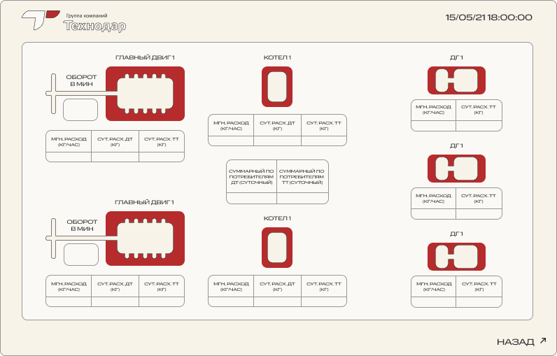

Система обработки и визуализации данных (VMTS)

Бортовой контроллер VMTS — один из элементов системы контроля транспорта. Он представляет собой инструмент визуализации данных, с помощью которого можно анализировать информацию об операциях с топливом, состоянии техники, ее местоположении и быстро реагировать на изменения в показателях.
VMTS собирает и обрабатывает первичные данные, поступающие с датчиков, и оперативно выводит их на экран для персонала. С его помощью специалисты в режиме реального времени узнают о процессе заправки транспортного средства, состоянии потребителей горюче-смазочных материалов, расходе топлива с привязкой к маршруту.
Какие данные будут выводиться на экран VMTS?
Для чего нужна система VMTS?
VMTS — промежуточное звено между глубокой аналитикой в системе DOTS и необработанными данными, которые фиксируют датчики на точках приема топлива и потребителях. Система аккумулирует полученную информацию, обрабатывает и передает далее по цепочке.
Чтобы выводить данные по техническому заданию заказчика, система оснащается мониторами. Экраны устанавливаются в любых местах в рамках локации (транспорта, буровой), и их количество зависит от потребностей организации.
В отличие от DOTS, бортовой контроллер VMTS транслирует значения параметров на конкретный момент, чтобы экипаж транспортного средства на месте выявлял нарушения или определял проблемы с оборудованием.
Для реагирования на нештатные ситуации система VMTS оснащается звуковым оповещателем. Если показатели отклонятся от контрольных значений, сигнализация мгновенно уведомит ответственного сотрудника.
Для какого транспорта устанавливают систему VMTS?
Система успешно применяется на:
Как с помощью VMTS можно сократить расходы на обслуживание транспорта?
Благодаря VMTS персоналу удается обнаружить проблемные области: выявить недостачи топлива, определить перерасход в потребителях, пресечь хищения ГСМ. В связке с другими инструментами (DOTS, датчики, контроллеры) VMTS предоставляет данные, на основе которых можно решать тактические задачи по управлению транспортом и оптимизировать издержки на его эксплуатацию.
Если показатели выйдут за обозначенные рамки, команда увидит их на экране VMTS и сможет предпринять меры по оптимизации.
Например, судно движется со скоростью 15 узлов, двигатель в таком режиме работает на 70% мощности. Скорость остается такая же, как при нагрузке на двигатель в 60%. Экипаж понимает, что может снизить мощность на 10 % при этом не потеряв в скорости. Принимается управленческое решение, и так сокращается расход топлива на обслуживание флота.
Такие случаи характерны не только для морского и речного транспорта, но и для железнодорожных локомотивов, грузовых автомобилей и других видов спецтехники. Так, наши клиенты уже воспользовались системой VMTS и смогли снизить расходы.
За 3-6 месяцев наши клиенты окупают установленное оборудование, сократив расходы на процесс эксплуатации транспорта.
Внедрить систему VMTS можно уже сейчас с помощью программы рассрочки от компании «Технодар».